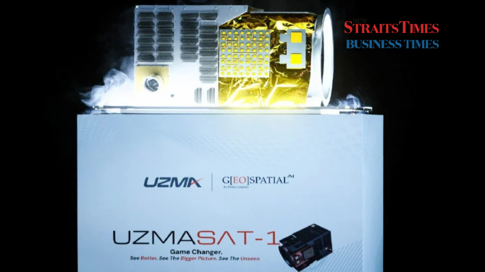

- Press Release, UzmaSAT-1
Malaysia launches remote sensing satellite UzmaSAT-1
- January 18, 2025
- By Media GeoAI
PUTRAJAYA: Malaysia’s remote sensing satellite, UzmaSAT-1, developed by local company Uzma Berhad, was launched into low orbit early this morning aboard SpaceX’s Falcon 9 Transporter 12 rocket.
The launch at 3am Malaysian time from the Vandenberg Space Force Base in California, United States, marks UzmaSAT-1 as the 13th satellite under Malaysia’s supervision.
In a statement this morning, the Science, Technology, and Innovation Ministry said as the leader of the National Space Policy, the ministry, through the Malaysian Space Agency (MYSA), remains committed to supporting local industry players in exploring activities that develop a competitive and sustainable national space sector.
The successful launch of the Uzma Berhad satellite is another indication of the success of the policy’s implementation, which was launched in 2023.
UzmaSAT-1, a high-resolution satellite weighing 45.4 kilogrammes, is expected to provide data and information on the country’s surface, enhancing monitoring operations and significantly impacting food security, safety, and national defence management.
The success of the launch and operation of UzmaSAT-1 demonstrates the active participation of local industry players in space-related activities, which can improve competitiveness and continuous innovation, save government expenditures, and contribute to the formation of a new space economy for the country.
Aligned with the implementation of the policy’s action plan, known as Malaysia Space Exploration 2030 (MSE2030), the success of this satellite launch will strengthen local capabilities and expertise in space technology, encouraging local industry players to explore new potential, to transition Malaysia from being a space technology user to a space technology creator.
It said the success of the UzmaSAT-1 satellite launch should serve as a catalyst for the development of a more advanced national space ecosystem for the benefit of the people and national progress.
The launch of UzmaSAT-1, broadcast live from Vandenberg Space Force Base in California, United States, was also streamed at the Uzma Group Headquarters in Kuala Lumpur and MYSA headquarters.
Sumber: New Strait Times | Business Times, NST Online | 15 Januari
By Mahani Ishak – Januari 15, 2025 @ 10:38am
Related Posts
Looking for Answers to Your Industry Issues?
If you want us to share more about space technology, EUDR, EO satellite applications, and industry related, feel free to drop your contact and experience the technology yourself.